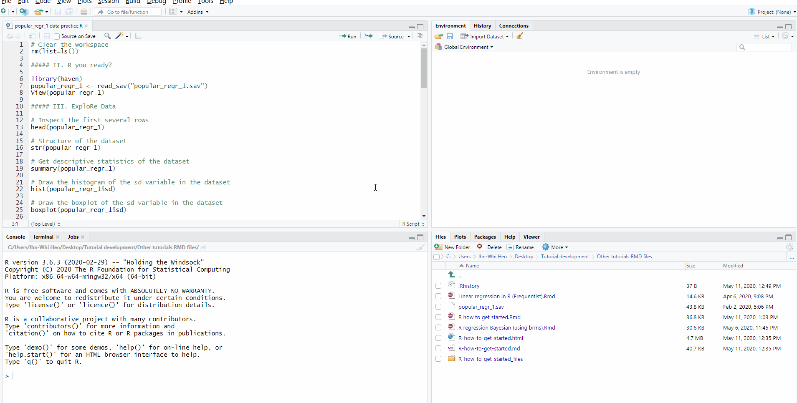

1.3 R tutorial for beginners (optional)
Welcome to the world of R! This tutorial is based on the tutorial “R: How to get started” by Ihnwhi Heo, Duco Veen, and Rens van de Schoot, and adapted for TCSM.
1.3.1 Who R you?
R is…
- Free programming software for statistical computation and graphics
- Open source: everyone (even you!) can improve, develop, and contribute to R
- The official manual by the R Core Team: An introduction to R
R itself looks a bit old-fashioned and tedious:

1.3.2 RStudio
Thankfully, we have a great user interface for R, called RStudio!
- RStudio helps users to use and learn R easier
- If you are using RStudio, this means you are using R.
- From now on, all tutorials will go with RStudio.
1.3.2.1 No ‘pane’, no gain!
When you open RStudio, the screen may look like this. You may notice that the screen is divided into A ‘panes’ (a pane is a division of a window):

Before we explain these three panes - I want you to add the fourth one, which you will see if you open an R script. An R script is like a “new document” in Microsoft Word. When you open an R script, the fourth pane appears.
1.3.2.2 Create a new R script
Click the icon with a plus sign on the paper. Click the icon highlighted by the red square:

When you click the icon, a new script appears in a fourth pane on the upper left side of the screen

The four panes really help become organized. In RStudio, you can do everything all together on one screen. Thus, four panes make the work efficient (indeed, no ‘pain’!).
1.3.2.3 What do the four panes do?
- Out of four panes, the two on the left side are the panes you will use a lot. - Source pane: located at the top left side of the screen. It is also called the “editor”, because this is where we edit scripts. We will usually type our code in the source pane. - Console pane: located at the bottom left side of the screen. This panel is for direct communication with R. We can type commands here that are immediately evaluated (whereas a script is only evaluated when we run it). Furthermore, all output of our commands is printed in this console pane.
- The panels on the right side of the screen contain various tabs. Among those tabs, it is worth looking at the Environment tab at the upper pane and the Plots tab at the lower pane. - The Environment tab contains all the ‘objects’ currently loaded in your R session. In SPSS, you can have only one data file open. In R, you can have as many data ‘objects’ as you like. They will be listed here. You can always check what objects are loaded under the environment tab. The environment is also called the ‘workspace’. - The Plots tab shows various graphs and figures we draw. If you click Zoom with the magnifying glass, you can see plots in a bigger size.
1.3.3 Loading data
- Statistical analysis cannot happen without data. In R, you can load data in various ways. Let’s see the easiest way.
- To download the dataset (
LifeSat) for this tutorial, see the Chapter Getting the course data.
1.3.3.1 Mouse clicks
- Click File -> Import Dataset -> Choose the type of dataset. In this tutorial, we will use the SPSS dataset. Thus, click ‘From SPSS’.
- Suddenly, you may encounter an Install Required Packages pop-up with a message that asks you whether you want to install the
havenpackage now. A package is an “enhancement” for R; in this case, an enhancement to allow it to read SPSS files.

- Click ‘Yes’.
- Then, the Import Statistical Data pop-up appears -> See File/URL -> Click Browse at the right end -> Open your file
- You will see your data in the Data Preview.
- If you look at the Import Options, you can set the name of your data file and the format of it.
- All of your ‘mouse-clicking’ is being translated to the R-code required to load your file. In the Code Preview, the steps required for loading the data are expressed in terms of code.
- Now, it’s time to load your data to R. How? Just click Import at the lower right side of the pop-up.
- In our example, the name of the dataset is
LifeSat.

1.3.3.2 Loading data with R code
- Let’s try to load the data with R code.
- In this course, we use the
read.spssfunction from thelibrary(foreign). It works best with all exercises. - Write the following code in an R-script:
library(foreign)
LifeSat <- read.spss("LifeSat.sav", to.data.frame = TRUE, use.value.labels = FALSE)- Select these lines with the mouse.
- Press the Ctrl and Enter buttons together.
- The lines of code are now evaluated by R, and R is telling you the result of its actions in the console pane.
There are many different ways to load data into R. During this course, we will see a few of them.
1.3.4 Explore your data
- As you saw, you can type some R codes in the source pane and run the codes by pressing Ctrl and Enter together to make R work. If you look at the R codes we used in loading the data, you see the instructions
read_sav()andView(). These are called functions. A functions is an instruction for R to perform a task. - When you use functions, you should type certain comments or inputs in the parentheses, which make the functions work. Those comments or inputs are called arguments. Let’s learn three new functions with their arguments. They are used in understanding the data.
1.3.4.1 head()
- The data consist of many rows. If you would like to inspect the first several rows (to see how the data look), the
head()function achieves your purpose. - For the
head()function, you will use only one argument: The name of the dataset.
- “Wait, what is the hash tag (#) doing there?” Don’t be surprised. The hash tag creates a “comment”; a bit of text that will not be evaluated by R. This is useful because we can write notes to help us remember what we are doing when there are many lines of code. Writing comments also helps when you have someone else review your code.
- Let’s run the code by pressing Ctrl and Enter together. R shows you the first six rows of the dataset in the console pane.
- You may be curious about some
NAs in the output.NArefers to ‘Not Available’. Those are missing values.
1.3.4.2 Extracting one variable
It is possible to extract a variable from the data using the dollar sign, $. In R, the dollar sign means: Take this object (a variable) out of another object (the data). In the example below, we ask R to take the variable LifSat out of the data.frame LifeSat:
## [1] 13 18 19 24 24 24 30 33 33 33 33 33 35 35 37 37 41 41 41
## [20] 43 43 43 44 44 44 45 47 48 48 48 50 51 51 52 53 53 53 53
## [39] 54 55 55 56 56 56 57 58 58 58 58 58 58 59 59 60 61 61 63
## [58] 63 63 65 66 67 67 67 67 68 68 68 69 69 69 69 69 70 70 70
## [77] 71 72 74 74 76 77 77 78 78 79 79 79 81 81 82 83 85 86 87
## [96] 91 99 100We see all 98 unique values.
1.3.4.3 Extracting rows and columns
It is possible to extract rows or columns from the data using data[row_numbers, col_numbers]. For example, the first four rows of the first two columns:
By leaving either rows or columns empty, we get all rows or columns:
We can refer to columns by name, too:
1.3.4.4 str()
- It is of interest to know what types of variables are in the dataset. For example, if you want to run an analysis of variance (ANOVA), the independent variable should be categorical, and we should check if it is the case.
- For this purpose, you can use the
str()function; wherestris short for structure. In running this function, you need one argument, which is again the name of the dataset.
## 'data.frame': 98 obs. of 8 variables:
## $ LifSat : num 13 18 19 24 24 24 30 33 33 33 ...
## $ age : num 75 75 72 72 70 73 72 72 68 73 ...
## $ educ : num 6 5 5 6 5 6 6 5 7 6 ...
## $ gender : num 2 2 2 2 1 2 1 2 1 1 ...
## ..- attr(*, "value.labels")= Named chr [1:2] "2" "1"
## .. ..- attr(*, "names")= chr [1:2] "male" "female"
## $ female : num 0 0 0 0 1 0 1 0 1 1 ...
## $ ChildSup: num 4 6 6 6 6 8 8 7 4 8 ...
## $ SpouSup : num 2 5 5 4 5 6 4 6 2 8 ...
## $ SES : num 3 1 1 1 1 1 1 2 2 2 ...
## ..- attr(*, "value.labels")= Named chr [1:3] "3" "2" "1"
## .. ..- attr(*, "names")= chr [1:3] "high SES" "middle SES" "low SES"
## - attr(*, "variable.labels")= Named chr [1:8] "" "" "Years of education" "" ...
## ..- attr(*, "names")= chr [1:8] "LifSat" "age" "educ" "gender" ...
## - attr(*, "codepage")= int 1252- According to the output in the console pane, the dataset consists of 98 observations and 8 variables. variables. This means that our dataset has 98 rows and 8 columns.
- It is written that respnr: num 1 2 3 4 5 6 7 8 9 10 … It means that the respnr variable is a number (abbreviated as num), and 1 is the value in the first row, 2 is the value in the second row, 3 is the value in the third row, and so on.
1.3.4.5 summary()
- How can we know about the mean, median, minimum, and maximum of the variables of interest? You can get the descriptive statistics of the variables with the
summary()function. Again, you only need one argument, which is the name of the dataset.
- Let’s look at the output in the console pane. The descriptive statistics per variable is given. For example, for the variable
LifSat, the minimum value is 1.455, the median is 3.636, and the mean is 3.628.
This summary is a bit messy; you can get a nicer summary using the describe() function from the psych package. We will learn more about this in the course.